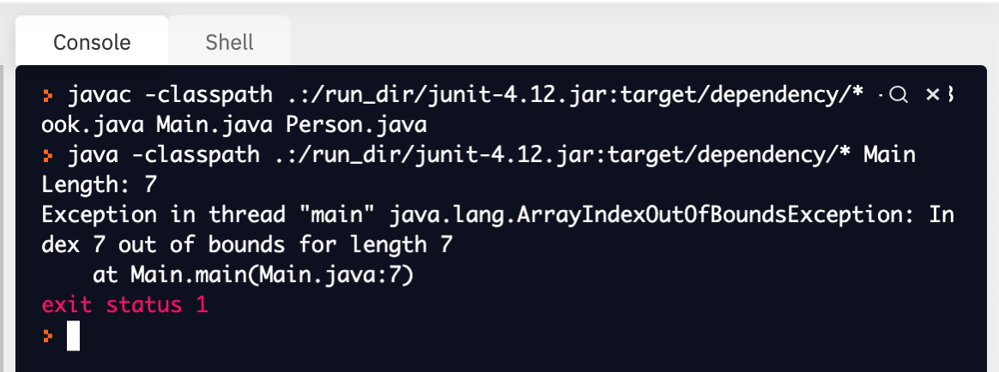

7.9. Revisiting Arrays¶
We have spent a lot of time exploring ArrayLists in our programs. But don’t forget about its ugly step-sibling, arrays! Remember, arrays are a way that you can collect a bunch of values in a single location. However, they are not dynamically sized – that is, their size cannot be changed once they are created.
Don’t worry, they’re not all that bad. Unlike ArrayLists, we can put primitive value types into arrays! This means that you can chuck a bunch of doubles, ints, and booleans into them and your computer won’t complain.
Let’s remind ourselves how we declare and initialize a variable to an array. It looks like this:
//Don't know what's going into it yet? Use this statement:
type[] arrayName = new type[size];
//Know what's going into it? Use this statement:
type[] arrayName = {value1, value2, valueN};
BAM! An array is born! You just gotta decide what you want to name the new bundle of joy. :p Well, that and the type of values you want to put into the array.
You should also remember that we can use index values to talk about the position of an item in an array. Take a look at this array:
String[] socialMedias = {"Facebook", "Instagram", "Snapchat", "TikTok", "Twitter", "Youtube"};
“Facebook” is at index 0, “Instagram” is at index 1, “Snapchat” is at index 2, “TikTok” is at index 3, “Twitter” is at index 4, and “Youtube” is at index 5.
We can use index values in our programs to access and manipulate values in an array. Here is how we would grab the String “Snapchat” and store it in a variable:
String[] socialMedias = {"Facebook", "Instagram", "Snapchat", "TikTok", "Twitter", "Youtube"};
String sc = socialMedias[2];
The chunk of code that looks like socialMedias[2] is called the index operator. The index operator is used to access values found in particular slots of an array. Whenever you are using the index operator in your program, you want to follow this pattern:
arrayName[index];
In the example above, the array will still contain the String “Snapchat”, but now we have a second variable that contains a copy of that value. If we were to change “Snapchat” to some other String in the array, the variable sc will still contain the String “Snapchat”.
Don’t get too excited! This does not work for ArrayLists. Instead, you have to use the method get(index). So the ArrayList equivalent to the code segment above, would look like this:
import java.util.ArrayList;
ArrayList<String> socialMedias = new ArrayList<String>();
socialMedias.add("Facebook");
socialMedias.add("Instagram");
socialMedias.add("Snapchat");
socialMedias.add("TikTok");
socialMedias.add("Twitter");
socialMedias.add("Youtube");
String sc = socialMedias.get(2);
You can also use the index operator to change values at a particular index. Imagine we wanted to change “Youtube” to “Pinterest”. We would need to write this:
String[] socialMedias = {"Facebook", "Instagram", "Snapchat", "TikTok", "Twitter", "Youtube"};
socialMedias[5] = "Pinterest";
Here, we are saying, “Take the value found at index 5 of the array socialMedias and change it to Pinterest.” We can complicate our use of the index operator by using it in our loops. Take a look at this example:
int[] evenNums = new int[100];
int number = 0;
for(int i = 0; i < 100; i++){
evenNums[index] = number;
number = number + 2;
}
First, this code segment creates an empty array that has 100 slots in it. Then, a variable named number is declared and initialized to 0. Finally, we use a for loop to add the current value of number to the array.
Here is the ArrayList equivalent of this program:
ArrayList<Integer> evenNums = new ArrayList<Integer>;
Integer number = new Integer(0);
for(int index = 0; i < 100; i++){
evenNums.set(index, number);
number = number + 2;
}
The ArrayList code segment has two differences I want you to notice. First, we have to use an Integer object instead of the primitive int. This is because ArrayLists can only store object types within them. Second, in order to change a value at a particular index within an ArrayList, we have to use the method set(). As you can see, set() takes 2 arguments: the index value that you would like to place a value at, and the value itself.
There is an attribute of arrays that you should know called length. This attribute does the same thing as the size() method from the ArrayList class. That is, length returns the number of items that can be found in an array. How does one use the length attribute? Take a look at this example:
boolean[] covidTestResults = {false, false, false, true, true, true, true};
System.out.println("Length: " + covidTestResults.length);
for(int index = covidTestResults.length; index > 0; index--){
System.out.println("Does patient " + index +" have covid? " + covidTestResults[index]);
}
Look for where you see the word length in the program above. Notice the period before it? That’s your dot operator! Remember, when you want to access the attribute of an object, you need to use the dot operator. This is no different because arrays are objects! The length attribute of arrays is really useful when you are using loops to iterate through an array because it can tell your loop to stop once it hits the very end of an array. What would happen if I changed the program above to look like this instead:
boolean[] covidTestResults = {false, false, false, true, true, true, true};
System.out.println("Length: " + covidTestResults.length);
for(int index = covidTestResults.length; index >= 0; index--){
System.out.println("Does patient " + index +" have covid? " + covidTestResults[index]);
}
Not much has changed; I just made the condition of our for loop index >= 0. When you try to run this, you will see the following output:
Output:
{kind=link}
NOOOOOoooo a compile-time error!!!!!!! More specifically, it’s an “Out of Bounds” error!

This is telling us that we tried to access an index that doesn’t exist. In the above example, we are trying to access the value found at index -1. And that’s a problem because there is no such thing as an index of -1! The lowest index value that you will see is 0. You will also get an “Out of Bounds” error when you try to access an index that is greater than the last index of an array.
I know this might feel like a lot, but I promise we will continue to practice reading and writing methods that specifically deal with iterating through an array. It is really important that you feel comfortable using loops to systematically access or change the values found in arrays and ArrayLists because this will be at least 50% of the content seen on the exam. This is so important, that there’s actually a third type of loop that is specifically used when working with arrays and ArrayLists.